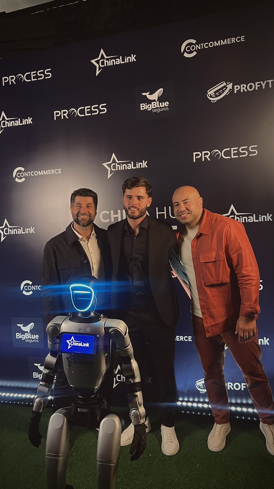

Objeções na recuperação de vendas: como um agente de IA responde “tá caro”, “vou pensar” e “frete caro” e fecha a venda
A maioria das vendas quase fechadas não morre por falta de interesse — morre numa objeção que ninguém respondeu. Aqui eu mostro como um agente de IA lê a objeção real e devolve a resposta certa, sem virar spam e sem torrar margem em desconto.

Na recuperação de vendas, a objeção não é o fim da conversa — é o começo dela. Quando alguém adicionou o produto ao carrinho, gerou um Pix ou pediu um orçamento e não finalizou, o interesse já existe: o que faltou foi resolver uma dúvida — preço, frete, prazo ou medo de errar. Um agente de IA de recuperação identifica essa objeção na resposta do cliente e devolve o argumento certo antes de pedir o fechamento. Ele quebra “tá caro” reancorando valor, quebra “vou pensar” descobrindo o que trava de verdade e quebra “frete caro” mostrando a conta — e só usa desconto como último recurso.
Eu construo esses agentes no dia a dia. E o erro número um que vejo é a mensagem que só repete “oi, seu carrinho está esperando 🛒” e reenvia o link. Isso não é venda — é lembrete. Venda é responder à razão que fez a pessoa parar.
- Objeção ≠ desinteresse. Quase toda venda travada tem uma razão específica.
- O agente pergunta antes de argumentar — “vou pensar” quase nunca é a objeção real.
- “Tá caro” se quebra com valor, parcelamento e prova — desconto é o último recurso.
- Objeção fora do roteiro ou cliente irritado → handoff para humano com o histórico.
Por que a venda quase fechada trava numa objeção
Quem abandona um carrinho raramente some por não querer o produto. A pesquisa contínua do Baymard Institute, referência mundial em usabilidade de checkout, mostra que boa parte dos abandonos tem motivo concreto e recuperável: custos extras (como frete) altos demais, exigência de criar conta, falta de confiança para informar o cartão e formas de pagamento insuficientes. Traduzindo: são objeções. E objeção, diferente de desinteresse, tem resposta.
O problema é que a maioria das operações trata a recuperação como disparo de lembrete, não como conversa de vendas. Reenviar o link não responde “o frete ficou caro” nem “fiquei com medo de não chegar a tempo”. Por isso a mesma loja que investe pesado em tráfego para trazer a pessoa até o carrinho desiste dela na porta do caixa.
Como o agente de IA descobre a objeção real (perguntar antes de argumentar)
A regra de ouro da quebra de objeção: você não responde a objeção que ouviu, responde a objeção que existe. “Vou pensar” é a campeã dos disfarces — atrás dela pode estar preço, prazo de entrega, forma de pagamento ou uma dúvida sobre o produto. Se o agente argumenta preço quando o problema era o frete, ele afasta a venda.
Por isso um bom agente de recuperação faz primeiro uma pergunta aberta e curta:
“Entendi 👍 Só pra eu te ajudar direito: o que te fez travar na hora de finalizar — foi o preço, o frete, o prazo, ou ficou alguma dúvida do produto?”
Oferecer as opções ajuda o cliente a nomear a objeção sem esforço — e dá ao agente o gancho exato para o argumento seguinte. É a diferença entre um atendente que empurra e um que entende.
Como um agente de IA responde “tá caro” (sem começar dando desconto)
“Tá caro” quase nunca significa “não tenho o dinheiro”. Significa “não enxerguei valor suficiente para esse preço”. A resposta certa é reancorar o valor — não cortar o preço na hora. O agente trabalha nesta ordem:
- Reforça o que está incluído: garantia, qualidade, o que acompanha o produto, o problema que ele resolve. Preço isolado assusta; preço com contexto se justifica.
- Divide o valor: mostra o parcelamento (“cabe em 10x de R$…”) ou o custo por uso. O cérebro do cliente compara parcelas, não o total.
- Compara com o custo de não resolver: o que ele continua perdendo ou gastando por não ter o produto.
- Traz prova: avaliações, número de clientes, garantia de devolução. Prova reduz o risco percebido, e risco percebido infla o “tá caro”.
- Só então, se preciso, oferece condição: um desconto condicional e com validade — nunca de graça na primeira mensagem.
Cuidado com o gatilho fácil do cupom: dar desconto na primeira objeção ensina o cliente a sempre esperar por desconto e corrói sua margem venda após venda. Eu detalho essa linha tênue no artigo sobre desconto na recuperação de carrinho abandonado — quando o cupom recupera venda e quando ele só transfere margem para quem ia comprar do mesmo jeito.
Como quebrar “vou pensar”
“Vou pensar” é adiamento, não recusa. O agente não deve aceitar o adiamento em silêncio (isso é o pedido morrendo devagar) nem pressionar. Ele faz duas coisas: descobre o que falta decidir e reduz o atrito de decidir agora.
- Legitima e pergunta: “Faz sentido 🙂 Normalmente quando alguém quer pensar é por causa de um detalhe específico — tem algo do produto, do prazo ou do pagamento que eu posso esclarecer agora?”
- Cria uma razão honesta para agir: estoque real acabando, condição válida até tal dia, prazo de entrega que muda se comprar hoje. Urgência inventada queima confiança; urgência verdadeira converte.
- Facilita o próximo passo: reenvia o link já preenchido, oferece finalizar por outro meio de pagamento, tira a fricção que o cliente não verbalizou.
Como quebrar “o frete ficou caro”
Frete é a objeção mais concreta — e por isso a mais fácil de tratar com clareza. O agente pode: mostrar o valor mínimo que libera frete grátis (“faltam R$ 40 pra você não pagar frete — quer que eu te sugira um item?”), oferecer um prazo mais barato, ou explicar por que o frete tem aquele custo para aquela região. Se a operação já trabalha com frete grátis a partir de um ticket, o agente vira um vendedor de order bump em vez de dar desconto. Se você ainda está definindo essa política, vale ler quando o frete grátis compensa e como calcular o valor mínimo.
Recuperação boa não insiste — argumenta. A objeção é a informação mais valiosa que o cliente te dá de graça: ele está dizendo exatamente o que falta pra fechar.
A quebra de objeção mora dentro da régua, não solta
Responder objeção não é uma mensagem isolada — é uma etapa dentro de uma sequência. A primeira mensagem reengaja e faz a pergunta; as seguintes trabalham a objeção que apareceu; e há um ponto de parar, para não virar perseguição. Essa cadência (quantas mensagens, em que intervalo e quando encerrar) é o que eu chamo de régua, e ela determina se a quebra de objeção chega no momento certo. Montei o desenho completo em régua de recuperação de vendas no WhatsApp. E o mecanismo de base — como o agente conversa no WhatsApp e reengaja o carrinho — está em recuperação de carrinho abandonado com IA no WhatsApp.
Por que a IA quebra objeção melhor que um roteiro fixo
Um chatbot de fluxo travava aqui: ele tem uma resposta pronta para “tá caro”, mas não sabe o que fazer quando o cliente diz “tá caro e o prazo é longo”. O agente de IA entende linguagem natural, identifica qual objeção (ou combinação) apareceu, puxa o argumento adequado e mantém o contexto da conversa inteira — inclusive lembrando o que o cliente já disse. É a diferença entre um vendedor que decorou um script e um que sabe vender. Se você ainda confunde os dois, expliquei a distinção — e o impacto no custo da operação — no guia sobre agentes de IA no WhatsApp.
Isso não significa liberar a IA para prometer qualquer coisa. O agente trabalha dentro de limites: os argumentos que pode usar, os descontos que pode ou não oferecer, e o momento de passar para uma pessoa. Objeção que vira reclamação, caso sensível ou negociação fora da política sai do roteiro e vai para o handoff humano — com todo o histórico, para o cliente não repetir nada.
Por onde começar
- Liste suas 5 objeções reais: olhe as conversas de quem não fechou. Preço, frete, prazo, confiança, forma de pagamento — quase tudo cai em cinco.
- Escreva o melhor argumento de cada uma: como seu melhor vendedor responderia. Esse é o cérebro do agente.
- Defina a régua e os limites: quantas mensagens, quando parar, o que o agente pode oferecer sozinho e quando chamar humano.
- Meça o que importa: não “quantas mensagens enviei”, e sim quanto de receita voltou. Métrica de vaidade não paga conta.
É assim que eu monto recuperação com IA: tratando a objeção como oportunidade, não como obstáculo. A venda quase fechada é a mais barata que existe — você já pagou o tráfego para trazer aquela pessoa. Deixá-la escapar por uma objeção sem resposta é o desperdício mais silencioso do e-commerce.
Perguntas frequentes
O que é quebra de objeção na recuperação de vendas?
É responder à razão real que impediu a compra — preço, dúvida, frete, medo de errar — em vez de só reenviar o link de pagamento. Na recuperação, a maioria das vendas não trava por falta de interesse, e sim por uma objeção não resolvida. O agente de IA identifica a objeção na resposta do cliente e responde a ela antes de pedir o fechamento.
Como um agente de IA responde “tá caro” sem dar desconto?
Ele reancora o valor: reforça o que está incluído, divide o preço em parcelas, compara com o custo de não resolver o problema e mostra prova (garantia, avaliações). Desconto é o último recurso, não o primeiro — dar cupom na primeira objeção ensina o cliente a esperar por desconto e corrói a margem.
O agente deve dar desconto para quebrar objeção de preço?
Só depois de tentar reancorar valor e entender se o preço é a objeção real. Desconto funciona melhor quando é condicional (validade curta, primeira compra) e quando a margem do produto comporta. Oferecer cupom logo na primeira mensagem transforma recuperação em leilão de margem.
Como o agente sabe qual é a verdadeira objeção do cliente?
Perguntando. Um bom agente de recuperação faz uma pergunta aberta (“o que te fez travar na hora de finalizar?”) antes de argumentar, porque “vou pensar” quase nunca é a objeção real — pode ser preço, prazo, forma de pagamento ou uma dúvida. Responder a objeção errada afasta a venda.
Quando o agente deve parar de quebrar objeção e passar para um humano?
Quando a objeção sai do roteiro (reclamação, caso sensível, negociação fora da política) ou quando o cliente demonstra irritação. O agente resolve o volume das objeções comuns e faz o handoff das exceções para uma pessoa, com todo o histórico da conversa.

Fundador da Gene Company. Especialista em sistemas e agentes de IA, criação de marcas e tráfego pago com ROI escalável para empresas. Santos/BR, atende Brasil e exterior. Fale comigo no WhatsApp →